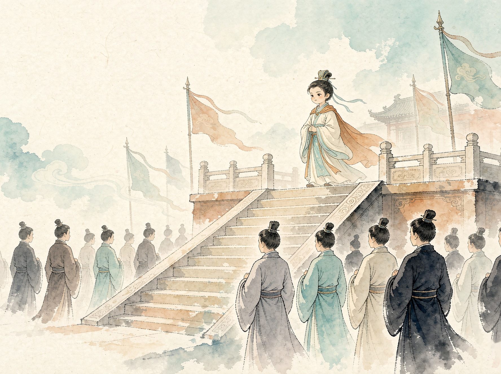

同光后，宣统弱。传九帝，满清殁
同光后，宣统弱。
传九帝，满清殁：承接「道咸间，变乱起」，写清之终。
同治、光绪之后，宣统以幼冲继位，国柄旁落，三年而清亡。
殁，终也。
「传九帝」一数与清之实际帝数有出入，通行本如此，本书仍之，另于成人页辨其故。
对比：道咸间，变乱起 / 同光后，宣统弱
上一句写乱之始，此句写亡之终。乱由外入，亡由内空；外患未息，内柄已失，故终。
对比前文阴阳太和：同光之际，洋务求强为阳之振，守旧拒变为阴之滞；振于外而滞于内，两不相济，遂至气尽。
勘破俗见：两类常见偏差。其一，以为清亡只因一二人之误国；其二，以为亡国之君必昏暴。契合般若范式：佛说兴亡，即非兴亡，是名兴亡。一朝之殁，缘在制度、世局、人心，非一幼帝所能致，亦非一幼帝所能救。
同治、光绪之后，宣统即位，年纪很小，天下大事他说不上话。
三年之后，清朝结束，两千多年的帝制也到此为止。
一个朝代的最后一段，常常不是坏，是空。
空了的位子，谁都扶不住。


落到心上理解
承接上一课存疑：外患既起，何以终至亡国？
外患是病，内空是命。洋务三十年，学其器而不改其制；新政十年，改其名而不易其人。器与制不相配，终不成活。
兴亡是缘起：世局、财政、军权、人心，四缘俱散，则一幼帝立于上而无根。
知其空而补之，不在补一人，在补制度与人；补之不及，则不必强扶，便是无住。
清亡只因慈禧、载沣一二人误国
误国者有其人，然制度之朽、世局之变，非一二人可挽
亡国之君必昏暴
宣统幼冲，其「弱」在势不在德，须分看
「传九帝」必为定数
清入关后实为十帝，九帝之说有辨，存疑而后可
- 同治、光绪之后，宣统以幼龄即位，国柄不在其手。
- 三年而清亡，两千余年帝制亦终。
- 一朝末路，常常不是坏，是空。
- 空了的位子，谁都扶不住。
一、勘俗见。别把亡国讲成「出了一个坏人」。让孩子分清「人的错」与「势的尽」。
二、现代对照。像一家老企业，掌门人再能干，若制度与市场已不相应，也只能收场。
三、承接常变主线。一朝之祚（变）有尽，治道之理（常）可鉴。
四、承接教与学二分。亡是师，读亡史者学到的是「何以空」，不是「谁可恨」。
承接选择力练习：看一个组织走下坡，先问「它的位子上，还有没有人能真正作主」。
同光后，宣统弱。传九帝，满清殁
一字义与句读
同光：同治、光绪。宣统：末帝溥仪年号。殁：终、亡。
全句释义：同治、光绪以后，宣统势弱；清传九帝而亡。
二命题考辨
「传九帝」之数，须辨。清自顺治入关至宣统退位，凡十帝：顺治、康熙、雍正、乾隆、嘉庆、道光、咸丰、同治、光绪、宣统。通行本作「九帝」，或自康熙起计（不计顺治之入关初基），或不及宣统（以其在位仅三年、且逊位而非终制）。另一系传本作「传十帝」，正合实数十。本书从通行本作「九帝」，不改原文，而于存疑标出，读者自知其数有异。
至若「满清殁」，宣统三年（1911）辛亥武昌起事，次年二月十二日退位诏下，清亡。
般若范式互参
帝数与国祚，皆是假名：以「九」「十」争一日之短长，而于「何以亡」不置一词，是执数而遗理。
延伸义理：
《金刚经》：寿者相不可得。国祚亦寿者相。
《道德经》：物壮则老。清之壮在康乾，老在道咸。
《坛经》：无常者，即佛性也。无常不是坏事，是生机。
三跨典互参（老庄、般若对照）
《道德经》：兵强则灭，木强则折。清之末，兵不足而名尚尊，名实相离。
《庄子》：其作始也简，其将毕也巨。二百年之积，毕于三年。
串联前文：由盛而衰而亡，清一段至此收束，下文入民国。
四和前面课程的张力
次第链条继续延伸：……始英法，扰都鄙 → 同光后，宣统弱 → 传九帝，满清殁 → 革命兴，废帝制。
呼应「道咸间，变乱起」：乱起于外，亡成于内，两句首尾相衔。
呼应「由康雍，历乾嘉」：盛衰相照，不过百年，最见史笔之冷。
呼应「教之道，贵以专」：同光之教，专在器而不在制，故器成而国不立。
「传九帝」与「传十帝」，孰为通行本之旧，孰为后人之改？
「弱」是评其人，还是评其势？
若无辛亥革命，清能自改革而立宪乎？